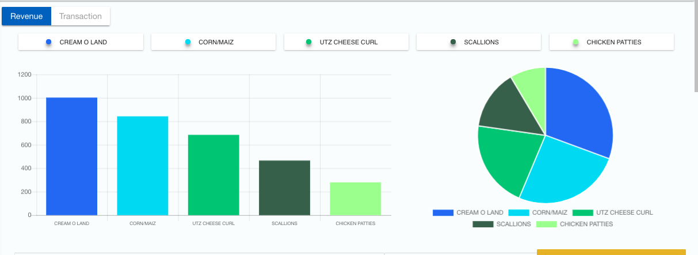
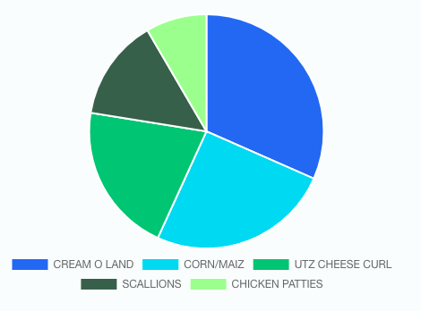
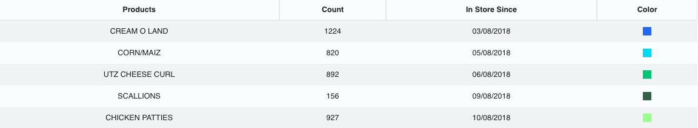
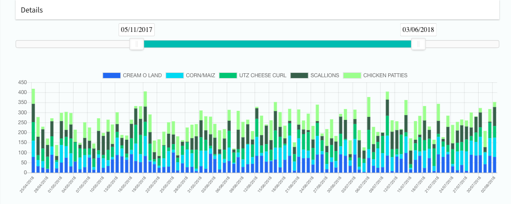

SLOW MOVERS¶
The ‘Slow Movers’ screen of the platform provides details of the slow moving products based on the revenue generated or the total number of transactions made by each product.The default time range for which insights are provided on the first load is the current week. This can be changed using the time filter in the top right portion of the screen.
Graphs¶
Bar Graph¶
- It depicts the number of days each product has stayed in store without replenishment. Each bar represents an individual product.
Pie Chart¶
- It depicts the contribution of revenue or the number of transactions made by each product in the slow movers’ list. Each section represents an individual product.
Table¶
- The table describes the products in the slow movers’ list with their respective quantity, the date since the product has been in the store and the color specified to each product.
Stacked Bar Graph¶
- This depicts the proportion of the count of each product in the slow movers’ list for an individual day during the time period specified in the filter above.
- The graph is depicted for the given products across all stores relevant to the end user.